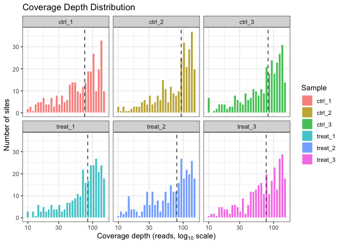
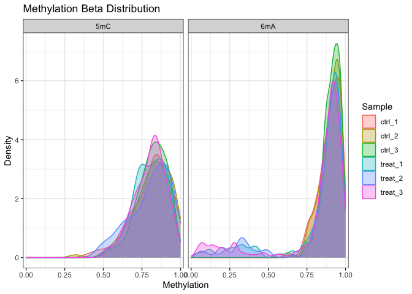
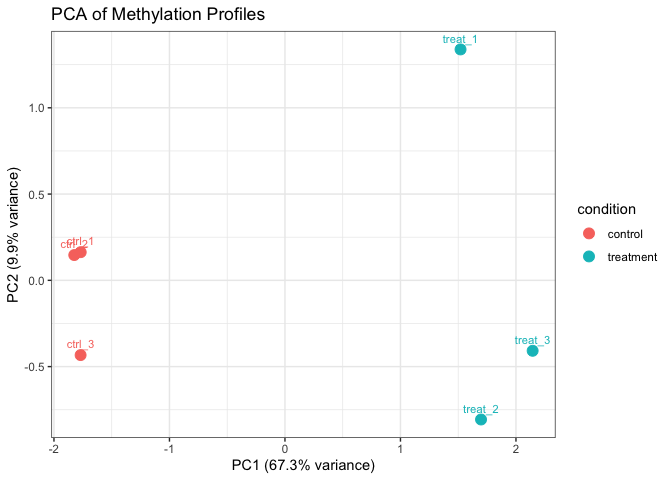
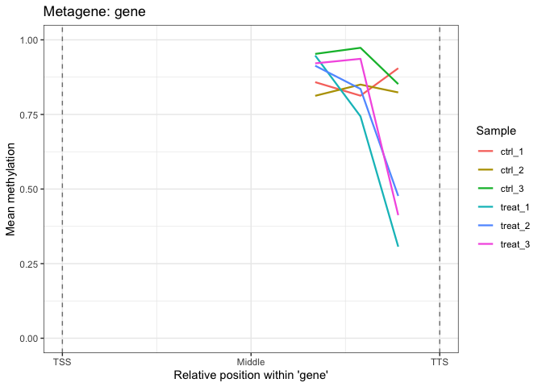
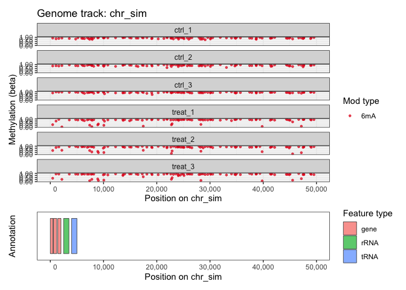
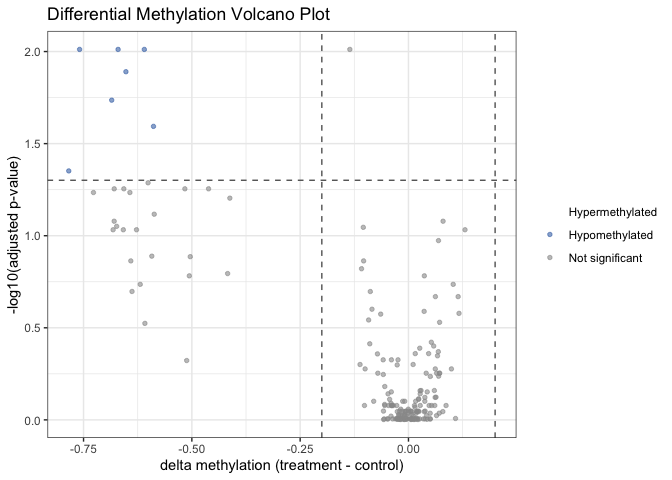
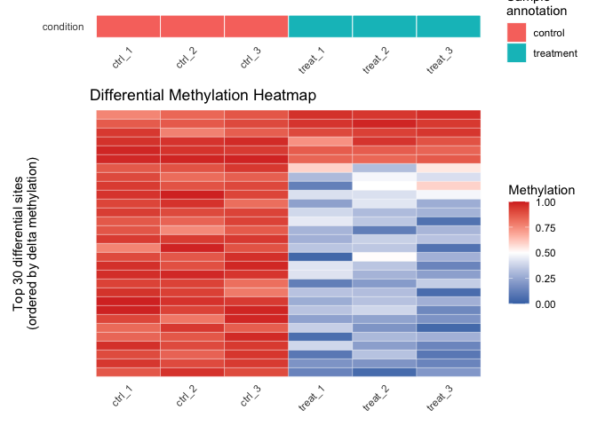

comma (comma: for microbial methylation analysis) is an R package for genome-wide analysis of bacterial DNA methylation from Oxford Nanopore sequencing data. It accepts output from modkit, Dorado, and Megalodon, supports 6mA, 5mC, and 4mC in a single unified container, and covers the full analysis workflow from raw files through quality control, site annotation, differential methylation testing, and publication-quality visualization.
Features
-
commaDataS4 class — extendsSummarizedExperiment; stores beta values, coverage, sample metadata, genome info, and annotations together. - Three parsers — modkit pileup BED (primary), Dorado BAM (full MM/ML tag decoding), and Megalodon (legacy).
-
Vectorized annotation via
GenomicRanges::findOverlaps(); three modes: overlap, proximity, and metagene (normalized position within feature bodies). -
Differential methylation — quasibinomial GLM per site with a DESeq2-style interface (
diffMethyl()→results()→filterResults()). -
Seven
plot_*()functions — coverage QC, beta distributions, PCA, genome tracks, metagene profiles, volcano plots, and heatmaps; all returnggplotobjects for further customization. - Any bacterial genome — no organism-specific values are hardcoded anywhere.
-
Multi-modification-type — 6mA, 5mC, and 4mC coexist in one object; every function accepts a
mod_typeargument to work with individual types.
Installation
# Development version from GitHub:
devtools::install_github("carl-stone/CoMMA")
#> ── R CMD build ─────────────────────────────────────────────────────────────────
#> * checking for file ‘/private/var/folders/3k/ldfp2j0n0f14b16ghvbmqcp00000gn/T/RtmpaBvRfl/remotesec493f429421/carl-stone-CoMMA-b5db7c0/DESCRIPTION’ ... OK
#> * preparing ‘comma’:
#> * checking DESCRIPTION meta-information ... OK
#> * checking for LF line-endings in source and make files and shell scripts
#> * checking for empty or unneeded directories
#> Removed empty directory ‘comma/.claude/worktrees/cranky-dhawan’
#> Removed empty directory ‘comma/.claude/worktrees’
#> Removed empty directory ‘comma/.claude’
#> * looking to see if a ‘data/datalist’ file should be added
#> * building ‘comma_0.6.0.tar.gz’
# Bioconductor (upcoming v1.0.0):
# BiocManager::install("comma")The commaData Object
commaData extends SummarizedExperiment and is constructed from per-sample methylation files:
library(comma)
# Named vector: sample_name → path to modkit pileup BED
files <- c(
ctrl_1 = "path/to/ctrl_rep1.bed",
ctrl_2 = "path/to/ctrl_rep2.bed",
treat_1 = "path/to/treat_rep1.bed",
treat_2 = "path/to/treat_rep2.bed"
)
col_data <- data.frame(
sample_name = c("ctrl_1", "ctrl_2", "treat_1", "treat_2"),
condition = c("control", "control", "treatment", "treatment"),
replicate = c(1L, 2L, 1L, 2L)
)
obj <- commaData(
files = files,
colData = col_data,
genome = "path/to/genome.fa", # FASTA, BSgenome, or named integer vector
annotation = "path/to/genes.gff3", # GFF3 or BED (optional)
motif = "GATC", # regex motif (optional)
min_coverage = 5L,
caller = "modkit" # "modkit", "dorado", or "megalodon"
)A built-in synthetic dataset (300 sites, 3 samples, 100 kb genome) is included for testing and demonstrations:
Workflow
Step 1 — Quality Control
methylomeSummary() returns per-sample distribution statistics:
ms <- methylomeSummary(comma_example_data)
ms[, c("sample_name", "condition", "mean_beta", "median_beta",
"frac_methylated", "n_covered")]
#> sample_name condition mean_beta median_beta frac_methylated n_covered
#> 1 ctrl_1 control 0.8678843 0.8881436 0.9900000 300
#> 2 ctrl_2 control 0.8728354 0.8951648 0.9966667 300
#> 3 ctrl_3 control 0.8781476 0.8966108 1.0000000 300
#> 4 treat_1 treatment 0.8135452 0.8829561 0.9166667 300
#> 5 treat_2 treatment 0.8136529 0.8867238 0.9000000 300
#> 6 treat_3 treatment 0.8004998 0.8694701 0.9066667 300plot_coverage() shows the sequencing depth distribution per sample:
plot_coverage(comma_example_data)
plot_methylation_distribution() plots the density of beta values, faceted by modification type. Bacterial methylomes often show a bimodal distribution (sites are either fully methylated or unmethylated):
plot_methylation_distribution(comma_example_data)
plot_pca() runs PCA on per-sample methylation profiles for sample-level QC:
plot_pca(comma_example_data, color_by = "condition")
Step 2 — Annotate Sites
annotateSites() maps sites to genomic features using GenomicRanges::findOverlaps() — vectorized, no nested loops:
annotated <- annotateSites(comma_example_data, type = "overlap")
# Fraction of sites overlapping at least one annotated feature
si <- siteInfo(annotated)
mean(lengths(si$feature_names) > 0)
#> [1] 0.02333333Three annotation modes are available: "overlap", "proximity" (nearest feature with signed distance), and "metagene" (normalized position 0–1 within feature bodies).
plot_metagene() shows the average methylation profile across gene bodies:
plot_metagene(comma_example_data, feature = "gene")
Step 3 — Genome Track Visualization
plot_genome_track() produces a genome browser–style scatter plot of methylation along a chromosomal region:
plot_genome_track(comma_example_data, chromosome = "chr_sim",
start = 1L, end = 50000L, mod_type = "6mA")
Step 4 — Differential Methylation
diffMethyl() tests each site for differential methylation between conditions. It is modeled on DESeq2’s workflow: pass a commaData object and a design formula, get back the same object with per-site statistics in rowData:
cd_dm <- diffMethyl(comma_example_data, formula = ~ condition,
mod_type = "6mA")Extract results as a tidy data frame and filter to significant sites:
res <- results(cd_dm)
sig <- filterResults(cd_dm, padj = 0.05, delta_beta = 0.2)
cat("Total 6mA sites tested:", nrow(res), "\n")
#> Total 6mA sites tested: 300
cat("Significant sites (padj < 0.05, |Δβ| ≥ 0.2):", nrow(sig), "\n")
#> Significant sites (padj < 0.05, |Δβ| ≥ 0.2): 7
# Top hits
head(res[order(res$dm_padj),
c("chrom", "position", "dm_delta_beta", "dm_padj")])
#> chrom position dm_delta_beta dm_padj
#> chr_sim:8907:-:6mA chr_sim 8907 -0.6097199 0.009737468
#> chr_sim:52014:+:6mA chr_sim 52014 -0.7591100 0.009737468
#> chr_sim:69527:+:6mA chr_sim 69527 -0.6702704 0.009737468
#> chr_sim:72824:-:6mA chr_sim 72824 -0.1353157 0.009737468
#> chr_sim:62293:-:6mA chr_sim 62293 -0.6522237 0.012869199
#> chr_sim:9028:-:6mA chr_sim 9028 -0.6850134 0.018361742plot_volcano() displays the differential methylation landscape — effect size (delta methylation) versus significance (–log10 padj):
plot_volcano(res)
plot_heatmap() shows per-sample beta values for the top differentially methylated sites:
plot_heatmap(res, cd_dm, n_sites = 30L)
Step 5 — Export to BED
writeBED(cd_dm, file = "results_6mA.bed", sample = "ctrl_1", mod_type = "6mA")Multi-Modification-Type Support
A single commaData object can hold 6mA, 5mC, and 4mC sites simultaneously. The mod_type argument is available on every analysis function:
# Modification types present in the example data
modTypes(comma_example_data)
#> [1] "5mC" "6mA"
# Subset to a single type
obj_6mA <- subset(comma_example_data, mod_type = "6mA")
obj_6mA
#> class: commaData
#> sites: 200 | samples: 6
#> mod types: 6mA
#> conditions: control, treatment
#> genome: 1 chromosome (100,000 bp total)
#> annotation: 5 features
#> motif sites: noneFor a complete joint 6mA + 5mC analysis, see the Multiple Modification Types vignette (vignette("multiple-modification-types", package = "comma")).
Documentation
?comma # Package overview and five-step workflow
?commaData # Constructor and commaData class
?diffMethyl # Differential methylation testingTwo vignettes are included:
-
Getting Started (
vignette("getting-started", package = "comma")) — end-to-end workflow: load → QC → annotate → differential methylation → visualize. -
Multiple Modification Types (
vignette("multiple-modification-types", package = "comma")) — joint 6mA and 5mC analysis in a singlecommaDataobject.
Roadmap
| Version | Phase | Status |
|---|---|---|
| 0.2.0 | Data infrastructure — commaData S4 class, modkit parser |
✅ Complete |
| 0.3.0 | Refactored analysis — annotateSites, slidingWindow, QC utilities |
✅ Complete |
| 0.4.0 | Differential methylation — diffMethyl(), beta-binomial GLM |
✅ Complete |
| 0.5.0 | Visualization — seven plot_*() functions, vignettes, package docs |
✅ Complete |
| 1.0.0 | Bioconductor submission | ⏳ In preparation |